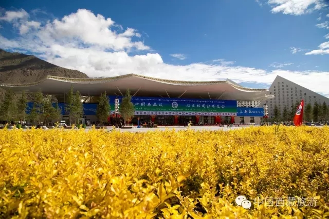

中国西藏新闻网

圆梦西藏：旅游文化发展的广阔前景和无限魅力
自治区党委副书记、自治区主席 洛桑江村
——在第三届中国西藏旅游文化国际博览会主旨论坛上的演讲
一次游藏、一生难忘；一次西藏行，一生西藏情。地球第三极所带来的屋脊体验、壮丽风光、一方净土、历史积淀、文化基因、人生感悟都是现代旅游的稀缺元素， 是提升生活品质、满足现代社会需求的精神滋养，特别是人与自然和谐相处的生存发展理念，在人类走向未来的进程中有着重要的现实意义。
西藏自治区党委、政府高度重视发展旅游文化产业，并作为经济社会发展中的支柱产业大力扶持、积极发展、努力培育。第一届、第二届中国西藏旅游文化国际博览会以来，西藏旅游文化得到了长足发展，展现出了美好的前景。
旅游文化融合发展。我们坚持把旅游文化产业作为全区经济的主导产业，推进旅游文化产业与其他产业有机融合。大力发展农畜产品加工业和民族手工业，加快科技 研发，生产更多具有高原特色的食饮品和纪念品，不断提高旅游商品的知名度和市场占有率。大力支持旅游文化节庆会展、演艺娱乐、高原极限运动等发展，打造各 具特色的旅游文化品牌，提升旅游的文化品位。
旅游文化建设优化。加大文物、非物质文化遗产保护力度，国家级非物质文化遗产项目89项，国家级非物质文化遗产传承人68人；西藏藏戏、“格萨尔”说唱入选联合国人类非物质文化遗产名录，布达拉宫、大昭寺、罗布林卡列入世界文化遗产。加大特色文化产业扶持力度，设立文化产业专项 资金，评选命名了一批自治区级文化产业示范基地和示范园区。青藏铁路通车10年来，西藏旅游文化产业呈现“井喷式”增长，进藏游客大幅增长，投资兴业者迅 猛增长，城乡居民收入加快增长。
旅游文化基础加强。以群众艺术馆、博物馆、图书馆、综合文化活动中心为框架的区市县乡四级公共文化设施网络基本形成。积极发展智慧旅游，众多旅游企业、家 庭旅馆已与各类新媒体、电商平台开展合作。加大创作和供给力度，推出了一批文艺精品力作，近百部作品荣获国家“五个一工程”奖和国家级文艺奖项。
我们将贯彻创新、协调、绿色、开放、共享发展理念，愿意同世界各地、四海宾朋一起创业，共同分享西藏旅游文化发展成果。
坚持西藏旅游创新发展。主动适应经济发展新常态，积极实施旅游主导战略，深入推进旅游文化领域简政放权、放管结合、优化服务改革，坚决破除制约旅游文化发 展的制度性障碍，大力推进供给侧结构性改革，更加注重发展特色、高端、精品旅游，更加注重发展的质量和效益，更加注重政策、资金、人才、技术等要素的有效 供给，走质量效益型的集约化发展道路，努力打造全域旅游体系，努力实现大旅游、大产业、大发展。
坚持西藏旅游协调发展。合理优化空间布局，打破条块分割，着力打造区域旅游协调发展大格局。依托作为西藏的政治、经济和文化中心，将拉萨建设成国际文化旅 游城市；依托丰富的生态资源，将林芝建设成国际生态旅游区；依托象雄文化底蕴，将阿里建设成冈底斯国际旅游合作区；依托众多雪山高峰，将日喀则打造成珠峰 生态旅游文化圈；依托藏文化源头，将山南打造成雅砻文化旅游圈；依托茶马古道，将昌都打造成康巴文化旅游圈；依托羌塘自然保护区，将那曲打造成羌塘草原文 化旅游圈。推动乡村旅游与新型城镇化建设有机结合，合理利用民族特色村寨、古村古镇，发展具有历史记忆、地域特色、民族特点的旅游小镇，建设一批特色景观 旅游名镇名村。
坚持西藏旅游绿色发展。良好的生态环境是西藏旅游业最大的潜力、最好的品牌、最大的价值。倡导绿色安全，坚守生态优先、保护第一的理念，实行最严格的环境 准入制度、最严格的环境影响评价制度、最严格的生态环境保护制度，让西藏的天更蓝、水更绿、空气更洁净，让广大游客无论何时何地都能畅享西藏大美的风光。
坚持西藏旅游开放发展。努力建设重要的世界旅游目的地、重要的中华民族特色文化保护地和面向南亚开放的重要通道，是西藏未来旅游文化发展的美好前景和宏伟 蓝图。加快基础设施互联互通，进一步拓展进出藏“陆路通道”和“空中走廊”。强化对内对外旅游合作，积极推动茶马古道、唐蕃古道、新藏旅游文化廊道建设； 积极参与孟中印缅经济走廊建设，大力推进环喜马拉雅经济合作带、中尼自由贸易区、吉隆跨境经济合作区和冈底斯国际旅游合作区建设。
坚持西藏旅游共享发展。把旅游文化作为富民产业，进一步提高和改善农牧民群众发展旅游的观念，提高农牧民发展旅游的能力，提高旅游项目农牧民的参与度，提 高农牧民在发展旅游中的获得感，让更多的农牧民吃上旅游饭。充分发挥旅游在脱贫攻坚中的独特作用，将以建成的鲁朗国际旅游小镇为突破点，大力发展以农家 乐、藏家乐、休闲度假为代表的乡村旅游，带动更多的农牧民群众特别是贫困群众增收致富，让西藏各族人民享受更多的旅游文化发展成果。
“人间圣地”胜似天堂，“天上西藏”人人神往。坚信有以习近平同志为总书记的党中央的亲切关怀，有全国各族人民的大力支援，有国内外各界人士的关心支持，有西藏各族人民的共同努力，西藏旅游文化产业必将迎来一个更加辉煌的明天。